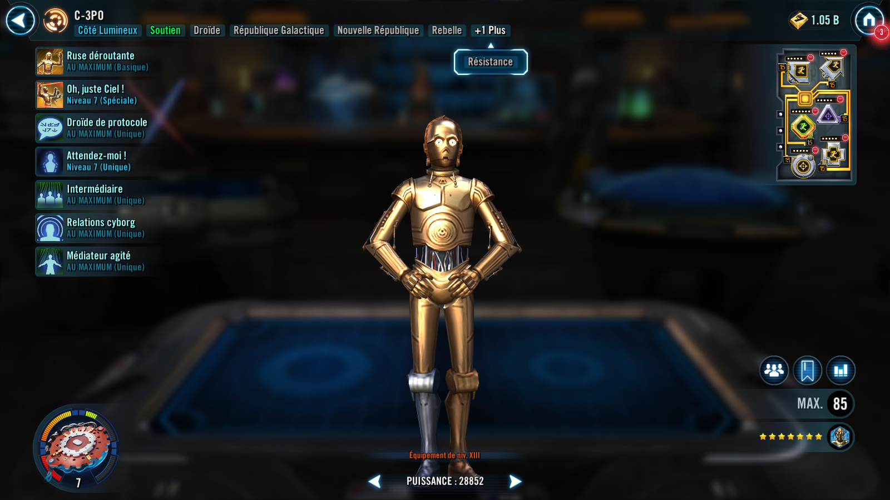
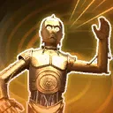
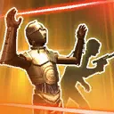

C-3PO
Evasive support character that Confuses foes and strengthens mixed-faction interplay with Translation.
Evasive support character that Confuses foes and strengthens mixed-faction interplay with Translation.


C-3PO inflicts the unique debuff Confuse for 3 turns (max 3 stacks, can't be evaded or copied). If target is already Confused, duration of their stacks resets to 3 turns. Reduce target's Turn Meter by 6% and 3% more for each stack of Translation on C-3PO. (See Protocol Droid for Translation.)
Confuse - Detrimental effects build based on the cumulative number of stacks:
1: Cannot gain buffs
2: Cannot counter, assist, or gain bonus Turn Meter (Raid bosses and Galactic Legends: -30% Counter Chance)
3: When this character uses their Basic ability, increase their cooldowns by 1, which can't be resisted (Raid bosses and Galactic Legends: -50% Defense, doesn't stack with Defense Down)

C-3PO gains Potency Up and Stealth for 2 turns, then he and target other ally gain Translation for 3 turns. C-3PO inflicts Confuse twice on target enemy for 3 turns, then calls all other allies with Translation to assist, dealing 50% less damage.
(See Protocol Droid for a description of Translation.)
C-3PO has +20 Speed. While C-3PO is active, Galactic Republic, Rebel, Resistance, and Ewok allies gain Translation for 3 turns (max 3 stacks) each time they use a Special ability. Translation cannot be copied. If the character already has Translation, the duration for all current stacks on that character resets to 3 turns. If all allies that can apply Translation are defeated, all stacks of Translation expire.
Translation - Beneficial effects build based on the cumulative number of stacks:
1: Gain +30% Max Health
2: Gain +15% Critical Chance
3: If only one ally who grants Translation is present, decrease this character's cooldowns by 1 when that ally uses their Basic ability (limit once per turn)

C-3PO and R2-D2 have +10% Evasion for each of their own stacks of Translation. At the start of encounter, C-3PO and R2-D2 gain Translation for 3 turns. When there are no other allied combatants, C-3PO escapes from battle.
All allies have +10% Defense Penetration. Each time a Galactic Republic or Ewok ally gains a different, non-unique, non-Protection buff, they gain 15% Protection Up for 2 turns (does not stack with itself). For each stack of Translation, Galactic Republic have +10% Defense Penetration, doubled for Ewoks.

All allies have +10% Potency. Whenever a Rebel or Ewok ally uses their Basic ability, they inflict Expose on the target enemy for 2 turns which cannot be evaded. For each stack of Translation, Rebel allies have +10% Potency, doubled for Ewoks.
All allies have +10% Critical Damage. Whenever a Resistance or Ewok ally uses their Special ability, they inflict Offense Down on the target enemy for 2 turns which cannot be evaded. For each stack of Translation, Resistance allies have +10% Critical Damage, doubled for Ewoks.